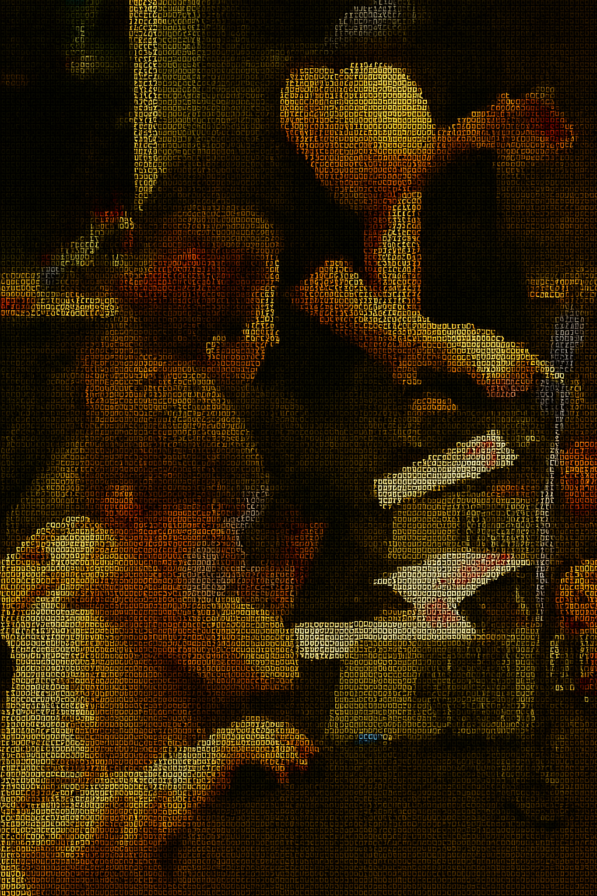
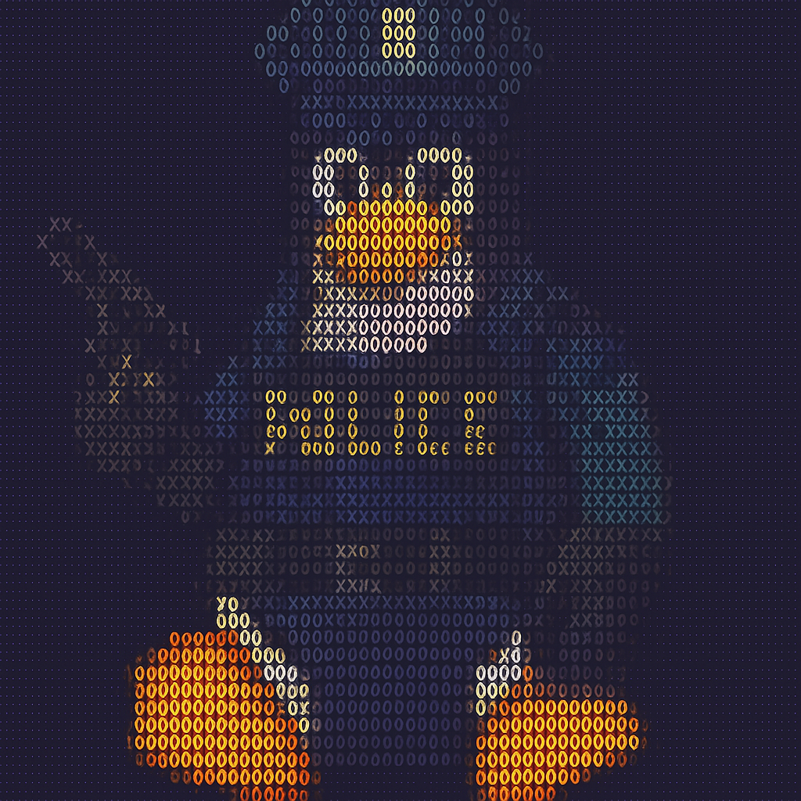

Selected Activities
Nacht van de Bib - CoderDojo
Een inspirerende avond waarbij ik jongeren introduceerde tot programmeren tijdens de 'Nacht van de Bib' in Bilzen-Hoeselt.
Met een Halloween-thema leerde ik kinderen de basis van programmeren via Scratch, waarbij ze hun eigen Flappy Bird-kloon
creëerden en experimenteerden met lasersnijder-workshops. Deze ervaring heeft mijn passie voor kennisdeling en onderwijs
binnen de IT-sector versterkt.

Politie Colleges - Digital Forensics
Diepgaande workshops over ICT binnen de politie en praktische training in digitaal forensisch onderzoek onder Linux.
Geleerd over grooming-technieken, phishing-aanvallen, en hands-on ervaring met forensische tools zoals The Sleuth Kit,
dd, dcfldd, en Guymager. Focus op acquisitie, analyse en presentatie van digitaal bewijsmateriaal, inclusief data carving
en Windows-artefact analyse binnen Linux-omgevingen.

Studiereis - Tech History & Innovation
Een zelfgeorganiseerde studiereis naar technologie-historische locaties, waaronder het Philips Museum in Eindhoven
en het Heinz Nixdorf MuseumsForum in Paderborn. Van de eerste gloeilamp productie tot mechanische rekenmachines,
ponskaarten en vroege computers zoals de Harvard Mark I. Afgesloten met de AWS Summit in Amsterdam voor
moderne cloud technologieën. Een inspirerende reis door de evolutie van computing en technologie.